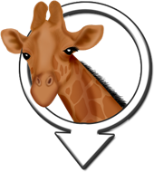
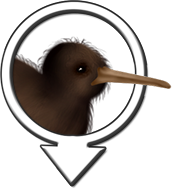
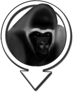
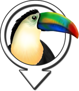
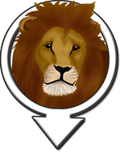

Giraffe
Giraffes are located next to the waterfall and the Zoo exit.

Kiwi
Kiwis are located across the bridge next to the rhino enclosure.

Gorilla
Gorillas are located across the bridge next to the rhino enclosure.
Rhinoceros
Rhinos are located across the bridge between the Gorilla and Kiwi enclosures.

Toucan
Toucans are located next to the Hungry Lions Picnic and Barbecues field.

Lion
Lions are located across the bridge from the Rhino enclosure.